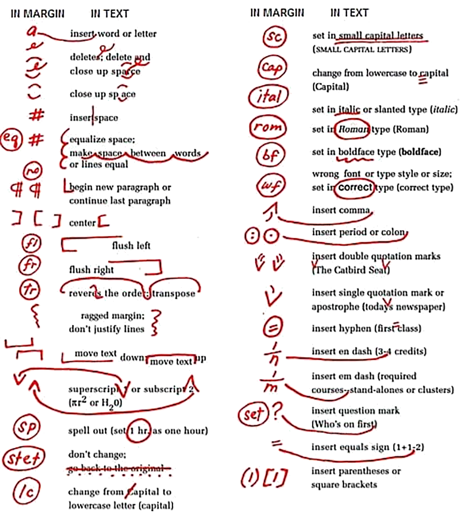

Proofreading symbols are a kind of shorthand used by editors to mark errors and suggest corrections on printed documents. To most people, they look like a jumble of lines, circles, and squiggles. To a proofreader, though, they’re a precise visual language that helps identify exactly what needs to change—and where.
Before the days of digital editing tools, these marks were essential. Proofreaders used them to flag spelling mistakes, punctuation errors, and layout issues directly on a physical page. Even today, they remain useful for those who prefer to edit on paper or want to learn the traditional craft of proofreading.
Each symbol has a specific meaning. A looped line might indicate that a letter should be capitalized. Three underlines call for bold type. A slash through a word signals deletion. When understood, these marks transform a messy page into a clear set of instructions for revision.
For anyone learning to proofread—or hiring someone who does—understanding these symbols provides a window into how professionals think about text. It’s not just about catching typos; it’s about improving clarity, rhythm, and readability.
Modern proofreaders rely more on digital tools than red pencils, but the principles behind those classic marks still apply: precision, consistency, and care for every detail. Whether you’re editing a novel or a business proposal, mastering the logic of proofreading symbols is one more way to make sure every word earns its place on the page.
Ready to raise your writing to Boomer standards? Contact me.
Curious about what I fix and why? Read the blog